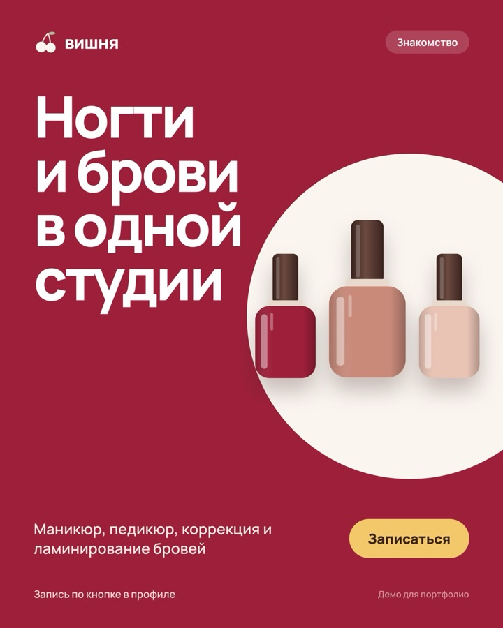

Ногти и брови в одной студии
Привет! Мы студия «Вишня»: делаем маникюр, педикюр и брови в одном месте, чтобы вы успевали всё за один визит.
В декабре рассказываем, как продлить покрытие, показываем праздничные дизайны и заранее публикуем свободные окна.
Записаться можно по кнопке «Записаться» в профиле: выбираете мастера и время, подтверждение придёт в сообщения.